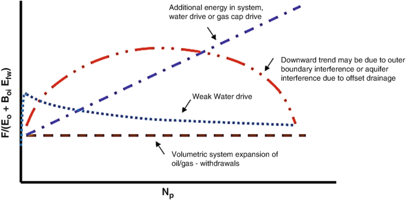
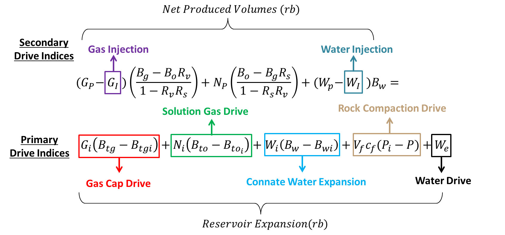

Analyzing with Pytank
Pytank main objective is to estimate the original oil in place (OOIP), using the material balance as the main tool. That is why two important concepts have to be taken into account, which are the subsurface withdrawal and the average pressure.
The calculation of average pressures and subway withdrawal are key concepts in reservoir engineering, especially when performing a material balance analysis and determining the behavior of a reservoir in terms of production and reserves. Below is a description of each, their relationship and their importance in the context of a reservoir's POES (Production, Operation, Efficiency and Sustainability) analysis.
Average Pressure
The average pressure in a reservoir refers to the average pressure found in the reservoir during a given period. This calculation is made from pressure measurements taken at different times and locations within the reservoir. The average pressure is crucial to understanding how reservoir conditions vary as fluids are withdrawn.
Underground Withdrawal
Underground withdrawal refers to the amount of fluids (oil, gas and water) that are extracted from the reservoir through the wells. This calculation considers cumulative production and is used to evaluate the efficiency of resource extraction in the reservoir. Subsurface withdrawal is essential to determine how fluid withdrawal affects pressure and saturation in the reservoir.
Average pressure and drawdown are interrelated in the analysis of reservoir behavior. As subsurface drawdown occurs, the pressure in the reservoir tends to decrease. This, in turn, can affect the reservoir's ability to continue producing fluids efficiently. Therefore, a proper analysis of both parameters is critical to understanding the state of the reservoir and predicting its future behavior.
Importance in OOIP Analysis
OOIP analysis focuses on the production, operation, efficiency and sustainability of a reservoir. Average pressure and subsurface withdrawal are critical components in this analysis for several reasons:
- Reservoir Evaluation: Knowing the average pressure allows engineers to estimate the original volume of oil and gas in the reservoir. This is fundamental to production planning and reservoir management.
- Production Optimization: Monitoring subsurface withdrawal helps engineers adjust production strategies. If the subway withdrawal is too high and the average pressure is decreasing rapidly, it may be necessary to change the extraction technique or implement enhanced recovery methods.
- Predicting Reservoir Behavior: By analyzing the relationship between average pressure and drawdown, engineers can predict how the reservoir will respond to different production scenarios. This is essential for making informed decisions about field operation.
- Sustainability: Proper management of subsurface pressure and drawdown is key to reservoir sustainability. Maintaining pressure at optimal levels helps extend reservoir life and maximize resource recovery.
Campbell Method
In a real case, many times there will be no information about the presence or absence of an aquifer and its characteristics. If you do not have an accurate description of the aquifer, you cannot get a more realistic prediction of the behavior of the reservoir.

- Horizontal straight line: indicates a purely volumetric system without any water influx. The reservoir's energy comes exclusively from the expansion of oil, dissolved gas in the liquid, and the standard component of compaction drive.
- Slight upward trend: implies that the reservoir has been supported by a moderate water drive.
- Steep upward trend: indicates a robust water-drive system where the aquifer exhibits infinite-acting characteristics.
- Declining trend: suggests the presence of a weak water drive.
The Campbell method is used in reservoir engineering to analyze the energy contribution of an aquifer in relation to oil production. This method allows the relationship between cumulative oil production (Np) and aquifer energy (F/Eo + Efw) to be graphed, making it easier to visualize how the aquifer affects reservoir production.
The importance of the Campbell method lies in its ability to provide a graphical representation of the influence of the aquifer on oil production. By performing a material balance analysis, engineers can determine how aquifer energy contributes to oil recovery. This is essential for:
- Optimizing production: Understanding the relationship between production and aquifer energy allows engineers to adjust production strategies to maximize hydrocarbon recovery.
- Evaluating reserves: The method helps estimate the volume of oil that can be recovered, which is crucial for production planning and reserve evaluation.
Material Balance
The material balance equation is based on the principle of conservation of mass, establishing a relationship between the original volume of hydrocarbons and the volumes produced, as well as the changes in the properties of the fluids throughout the production process. This equation can be expressed as follows:

To apply the material balance equation, the following must be considered:
- Constant pore volume.
- Thermodynamic equilibrium between reservoir fluids.
- Processes at the same temperature.
- Negligible formation and formation water compressibility effects.
- Closed and homogeneous system.
- Representative PVT information
Havlena-Odeh method
The Havlena and Odeh method is fundamental to the material balance equation (MBE), especially in the context of petroleum reservoir engineering. This approach allows the EBM to be represented as a straight line, which facilitates the estimation of key parameters such as the original amount of oil in situ and reservoir behavior under different production conditions.
The material balance equation was significantly reduced to the following equation.
$$ F = N (E_o + E_{fw} + m E_g) + W_e $$
Where each term represents:
- F: Fluids produced from the reservoir.
- N: Original In Situ Oil (POES)
- Eo: Oil expansion
- Efw: Expansion of connate and formation water
- Eg: Expansion of Gas
- m: Gas layer
- We: Water Influx
For Sub-saturated Reservoirs, assuming that during the production process of a reservoir there is no injection of fluids to improve its production, from the equation described above several terms can be eliminated such as:
- m: Being an under saturated reservoir there will be no associated gas layer.
- Rs = Rsi = Rp: The gas is dissolved in the oil.
- We: Assuming that initially there is no aquifer present.
So equation would be expressed as follows for under saturated reservoir:
$$ F = N(E_o + E_{fw}) $$
From the equation developed, a theoretical graph is obtained that attempts to predict the behavior of an under saturated reservoir, in which the fluids produced by the reservoir (F) are related to the expansion of the fluids (Eo + Efw), where it is assumed that the slope must be an approximate value to the OOIP (N).

The Havlena-Odeh method is essential in material balance analysis for the following reasons:
- Calculation of OOIP: This method allows the calculation of the inferred OOIP (Original-Oil-in-Place), which is essential for assessing the amount of oil that can be recovered from a field. Accuracy in the estimation of POES is vital for planning and decision-making in the exploitation of the field.
- Comparison of pressures: The method allows the comparison of observed pressure with calculated pressure, helping to identify discrepancies that may indicate problems in the field or in the modelling of the aquifer.
- Aquifer modeling: By incorporating aquifer models such as Fetkovich and Carter-Tracy, the method provides a robust framework for understanding how the aquifer affects oil production, which is crucial for effective resource management.
Analysis Class
The Analysis class includes a private method called _pressure_vol_avg, which
is responsible for calculating the average pressure in the reservoir. This
method uses underground pressure and withdrawal data to determine the average
pressure over time. Average pressure is crucial to understanding how fluid
extraction affects reservoir conditions and to predict future reservoir
behavior.
The class also includes a private method called _calc_uw, which calculates
underground withdrawal per well. This method combines production and pressure
data to determine how much fluid has been removed from the reservoir.
Underground removal is essential to assess production efficiency and how it
affects pressure in the reservoir.
Pytank allows you to use two important graphical methods in the process so that
you can perform the respective analysis of your data: Campbell and
Havlena & Odeh.
Campbell Method
The campbell_plot function generates a Campbell chart that illustrates the relationship between cumulative oil output (Np) and aquifer energy (F/Eo + Efw). This visualization is essential to understanding how the energy of the aquifer contributes to oil recovery.
Function campbell_plot
You can use this function to plot the relationship between Np and F/Eo + Efw, allowing you to visually assess the influence of the aquifer on production. In addition, you can choose to plot a regression line or a custom line to analyze specific trends.
fig = tank.campbell_plot(custom_line=True, x1=100, y1=0.5, x2=200, y2=0.6)
Function campbell_data
Also allows to obtain a DataFrame with the data used for the Campbell plot, facilitating numerical analysis and data manipulation for reports or further studies.
campbell_df = tank.campbell_data()
Havlena and Odeh Method
This graph allows you to calculate the OOIP (Original Oil in Place). There are two options to create the chart:
- Using the Campbell method, the presence of an aquifer can be inferred, indicating that a non-volumetric sub-saturated layer is being worked.
- In the absence of an energy supply, it is considered a volumetric sub-saturated reservoir.
Function havlena_odeh_plot
You can use this function to visualize the relationship between Eo + Efw and F - We, helping to identify patterns and trends in production. A regression line or custom line can also be plotted for more detailed analysis.
fig_havlena = tank.havlena_odeh_plot(custom_line=False)
Function Havlena_oded_data
This function will allow you to obtain a DataFrame containing the data used for the Havlena and Odeh plot, which will allow you to perform further analysis and perform additional calculations based on this data.
havlena_df = tank.havlena_oded_data()
Analytical Method
This method is based on an inferred OOIP, which is used to recalculate a synthetic pressure. The inferred POES is relevant when the pressure observed in the reservoir shows a behavior similar to the calculated synthetic pressure. In this case, it can be confirmed that the POES is suitable for the matter balance equation.
Function analytic_method
Usage: this function allows to calculate the inferred POES and compare the observed pressure with the calculated pressure, using aquifer models such as Fetkovich and Carter-Tracy. This is essential to validate the reservoir model and optimize production.
pressure_data = tank.analytic_method(poes=5000, option=“data”)
fig_pressure = tank.analytic_method(poes=5000, option=“plot”)
For more information on the Analysis class you can review its documentation.